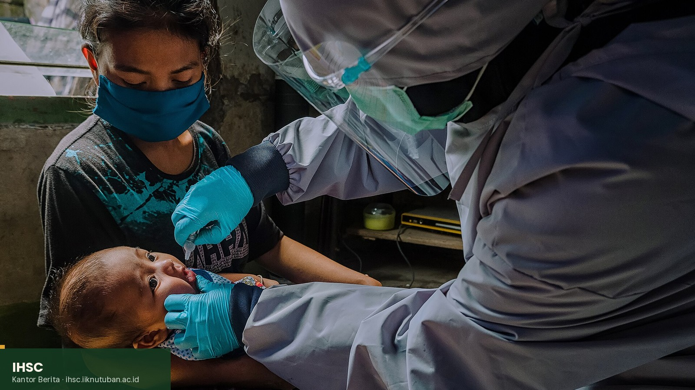
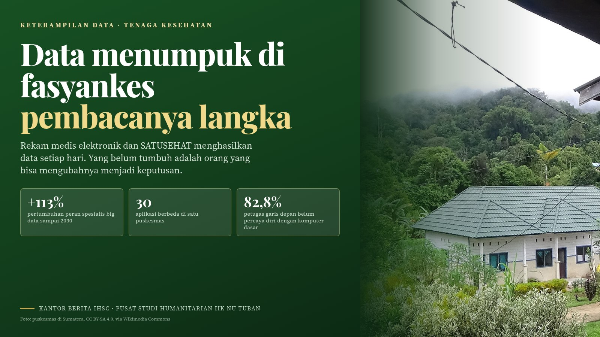

Is Indonesia Underdeveloped, or Simply Being Drained?
Benarkah Negara Kita Bukan Tertinggal, Melainkan Dikuras?

TUBAN, IHSC. A sentence has been circulating on social media this month: poor countries are not 'under-developed', they are 'over-exploited'. It is attributed to Michael Parenti, an American political scientist.
TUBAN, IHSC. Sebuah kalimat beredar di media sosial bulan ini: negara miskin bukan kurang berkembang, melainkan dikuras. Kalimat itu dikaitkan dengan Michael Parenti, ilmuwan politik Amerika Serikat.
What he actually wrote, in Against Empire, published in 1995, is this: most of the Third World is not 'underdeveloped' but overexploited. The circulated version condenses it, and the meaning holds. But a slogan is not evidence, so the sentence deserves a test.
Yang dia tulis sebenarnya, dalam Against Empire terbitan 1995, begini: sebagian besar Dunia Ketiga bukan terbelakang, melainkan dieksploitasi berlebihan. Versi yang beredar meringkasnya, dan maknanya tidak berubah. Tetapi slogan bukan bukti, jadi kalimat itu perlu diuji.
Most of the Third World is not "underdeveloped" but overexploited.
Sebagian besar Dunia Ketiga bukan terbelakang, melainkan dieksploitasi berlebihan.
Michael Parenti, Against Empire, 1995 Michael Parenti, Against Empire, 1995The first test comes from measurements of unequal exchange. Hickel, Dorninger, Wieland and Suwandi (2022) calculated the flow of resources and labour from South to North through trade prices. In 2015 the North net-appropriated 12 billion tonnes of raw materials, 822 million hectares of land, 21 exajoules of energy and 188 million person-years of labour. Priced at Northern rates, that is 10.8 trillion US dollars, enough to end extreme poverty 70 times over. Across 1990 to 2015 the total reached 242 trillion dollars.
Uji pertama datang dari perhitungan pertukaran tidak setara. Hickel, Dorninger, Wieland, dan Suwandi (2022) menghitung aliran sumber daya dan kerja dari Selatan ke Utara melalui harga dagang. Pada 2015, Utara menyerap bersih 12 miliar ton bahan mentah, 822 juta hektare lahan, 21 exajoule energi, dan 188 juta tahun-orang kerja. Dengan harga di Utara, nilainya 10,8 triliun dolar AS, cukup untuk mengakhiri kemiskinan ekstrem 70 kali. Sepanjang 1990 sampai 2015 totalnya 242 triliun dolar.
The second test is about money. UNCTAD records that since 2022 resource transfers to developing countries have turned negative: more money leaves than arrives, about 50 billion dollars in 2023. Developing countries paid 850 billion dollars in debt service that year, with the median reaching 16 percent of export earnings, against the 5 percent once judged acceptable for post-war Germany. The result is that 3.3 billion people live in countries spending more on debt than on health or education.
Uji kedua soal uang. UNCTAD mencatat sejak 2022 transfer sumber daya ke negara berkembang berbalik negatif: lebih banyak uang keluar daripada masuk, sekitar 50 miliar dolar AS pada 2023. Negara berkembang membayar 850 miliar dolar AS untuk layanan utang tahun itu, dengan median mencapai 16 persen dari penerimaan ekspor, sementara 5 persen pernah dianggap layak untuk Jerman pascaperang. Akibatnya 3,3 miliar orang hidup di negara yang membayar utang lebih besar daripada anggaran kesehatan atau pendidikan.
In Indonesia that chain has a face: nickel. After raw ore exports were banned in 2020, the value of nickel product exports rose from 4 billion dollars in 2017 to 34 billion in 2022. The figure that rarely appears beside it: CREA and CELIOS (2024) estimate that emissions from processing plants and captive coal power in Central Sulawesi, Southeast Sulawesi and North Maluku would cause more than 3,800 deaths in 2025, with an economic burden of 40.7 trillion rupiah a year. On 24 December 2023, 21 workers died in a smelter explosion. Between 2015 and 2022, 53 workers were recorded killed and 65 incidents reported.
Di Indonesia, rantai itu punya wajah sendiri: nikel. Setelah ekspor bijih mentah dilarang pada 2020, nilai ekspor produk nikel naik dari 4 miliar dolar AS pada 2017 menjadi 34 miliar pada 2022. Angka yang jarang muncul bersebelahan dengannya: CREA dan CELIOS (2024) memperkirakan emisi pabrik pengolahan dan pembangkit batu bara captive di Sulawesi Tengah, Sulawesi Tenggara, dan Maluku Utara menyebabkan lebih dari 3.800 kematian pada 2025, dengan beban ekonomi 40,7 triliun rupiah setahun. Pada 24 Desember 2023, 21 pekerja tewas dalam ledakan smelter. Antara 2015 dan 2022, 53 pekerja tercatat tewas dan 65 insiden dilaporkan.


Ketuk gambar untuk membuka ukuran penuh / Tap image for full size
For humanitarian work this is not an economics lesson. What arrives at the health centre and the district hospital is the end of that chain: a child who cannot breathe, a worker with burns, a family that loses its income. When a state budget goes further into debt service, the fiscal room for health care is what gets cut, and the burden lands on the facility at the very end of the line.
Bagi kerja kemanusiaan, ini bukan pelajaran ekonomi. Yang datang ke puskesmas dan rumah sakit kabupaten adalah ujung rantai tadi: anak yang sesak napas, pekerja dengan luka bakar, keluarga yang kehilangan penghasilan. Ketika anggaran negara lebih banyak habis untuk membayar utang, ruang fiskal untuk layanan kesehatan yang terpangkas, dan bebannya turun ke fasilitas paling ujung.
The limits of the evidence deserve to be stated. Estimates of unequal exchange depend on input-output tables and price assumptions, and some economists dispute both size and direction. The death figures in the nickel study come from modelling, not from counting bodies. Downstreaming does bring state revenue and jobs. So the honest summary is this: the direction of the claim is supported, the magnitude is still argued over, and the causal chain is not simple.
Batas bukti perlu dinyatakan. Perkiraan pertukaran tidak setara bergantung pada tabel input-output dan asumsi harga, dan sebagian ekonom membantah besaran maupun arahnya. Angka kematian dalam studi nikel berasal dari pemodelan, bukan hitungan jenazah. Hilirisasi juga mendatangkan penerimaan negara dan lapangan kerja. Jadi ringkasan yang jujur begini: arah klaimnya didukung, besarannya masih diperdebatkan, dan rantai sebab-akibatnya tidak sederhana.
IHSC therefore reads this as a research agenda rather than a slogan. The climate change division and the disaster risk and response division share the same task here: recording the health burden around industrial estates, something that is quoted far more often than it is measured. Pesantren communities and nahdliyin families living beside industrial parks and freight routes are the first to carry that burden, and the least counted.
Karena itu IHSC membaca persoalan ini sebagai agenda kajian, bukan slogan. Bidang Perubahan Iklim dan bidang Risiko dan Respons Bencana punya tugas yang sama di sini: mendata beban kesehatan di sekitar kawasan industri, sesuatu yang jauh lebih sering dikutip daripada diukur. Komunitas pesantren dan keluarga nahdliyin yang tinggal di sekitar kawasan industri dan jalur angkut barang adalah pihak pertama yang menanggung, dan yang paling jarang dihitung.
Parenti's line is too neat to serve as a conclusion. But its direction can be tested, and the result is uncomfortable: Indonesia's natural wealth leaves as raw material and low value added, while the health bill stays here. The task of a humanitarian body is not to prove who is guilty, but to record who pays.
Kalimat Parenti terlalu rapi untuk dijadikan kesimpulan. Tetapi arahnya bisa diuji, dan hasilnya tidak nyaman: kekayaan alam Indonesia keluar dalam bentuk bahan mentah dan nilai tambah rendah, sementara tagihan kesehatannya tinggal di sini. Tugas lembaga kemanusiaan bukan membuktikan siapa bersalah, melainkan mencatat siapa yang membayar.
Sources
Sumber
- Michael Parenti, Against Empire, City Lights Books, 1995, excerpt "Imperialism 101": thirdworldtraveler.com
- Michael Parenti, Against Empire, City Lights Books, 1995, kutipan "Imperialism 101": thirdworldtraveler.com
- Hickel, J., Dorninger, C., Wieland, H. & Suwandi, I., "Imperialist appropriation in the world economy", Global Environmental Change 73 (2022) 102467: LSE Research Online
- Hickel, J., Dorninger, C., Wieland, H. & Suwandi, I., "Imperialist appropriation in the world economy", Global Environmental Change 73 (2022) 102467: LSE Research Online
- UNCTAD, statement by the Secretary-General, Summit of the Future, September 2024: unctad.org
- UNCTAD, pernyataan Sekretaris Jenderal, Summit of the Future, September 2024: unctad.org
- CREA & CELIOS, Debunking the value-added myth in nickel downstream industry, February 2024: energyandcleanair.org
- CREA & CELIOS, Debunking the value-added myth in nickel downstream industry, Februari 2024: energyandcleanair.org
- Editorial note: the sentence circulating on social media compresses Parenti's original line; the book version is quoted here. Death and cost figures from the nickel study are modelling estimates, not counted cases.
- Catatan redaksi: kalimat yang beredar di media sosial memadatkan kalimat asli Parenti, dan versi buku yang dikutip di sini. Angka kematian serta biaya dari studi nikel adalah perkiraan pemodelan, bukan kasus terhitung.
- Photograph: Morowali Industrial Park, Ministry of Public Works and Housing, public domain, via Wikimedia Commons.
- Foto: Kawasan Industri Morowali, Kementerian Pekerjaan Umum dan Perumahan Rakyat, domain publik, via Wikimedia Commons.
Related news
Berita terkait

HumanitarianKemanusiaanA Contaminated Patient Arrives. Does the Hospital Know What to Do?
Pasien Datang Terkontaminasi Radiasi, Apakah Rumah Sakit Kita Tahu yang Harus Dilakukan?
17 November 202617 November 2026
PolicyKebijakanHealth Facilities Produce the Data. The Workers Who Can Read It Are Still Scarce
Data Menumpuk di Fasyankes, Tenaga Kesehatan yang Bisa Membacanya Masih Langka
24 October 202624 Oktober 2026 PolicyKebijakan
PolicyKebijakan